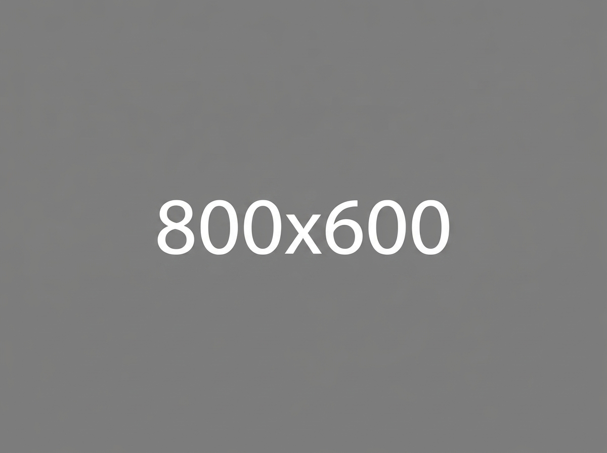
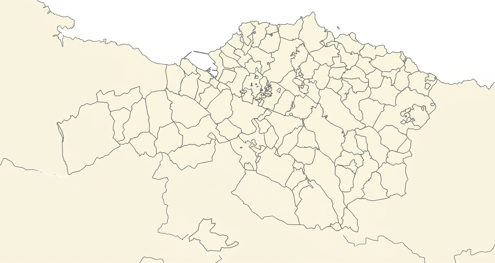
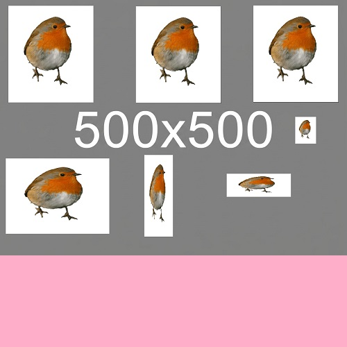

Sobre Nosotros
Registro de aves y plantas en el territorio histórico de Bizkaia.
Forma parte de una comunidad apasionada para los amantes de la naturaleza de nuestras tierras y mares. Nuestro objetivo es documentar, proteger y compartir la riqueza natural que nos rodea, impulsando la ciencia ciudadana y el respeto ambiental.

Mapa de Municipios de Bizkaia
Pasa el cursor por las diferentes zonas y haz clic en cada municipio para acceder a su catálogo de flora y fauna.


Destacado del Mes
Animal de Octubre 2026: El Petirrojo (Txantxangorri)
Foto cortesía de: nombreinventadodelusuario
El petirrojo es una de las aves más reconocibles de nuestros bosques atlánticos gracias a su característico babero anaranjado. ¿Quieres que tu foto sea la próxima protagonista?
Envía tus fotos aquí para participar